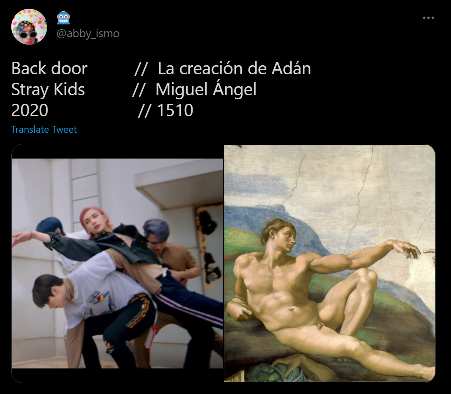
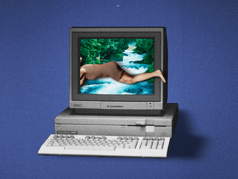
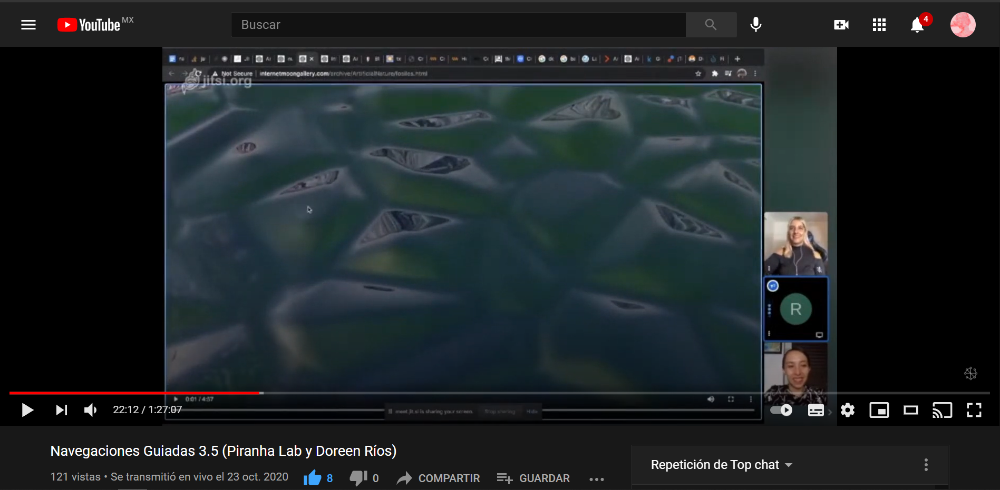
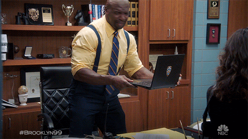
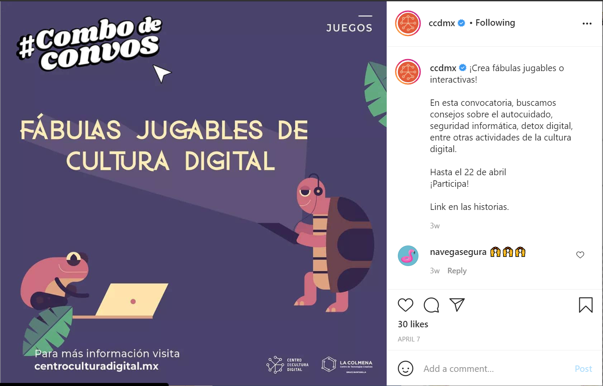
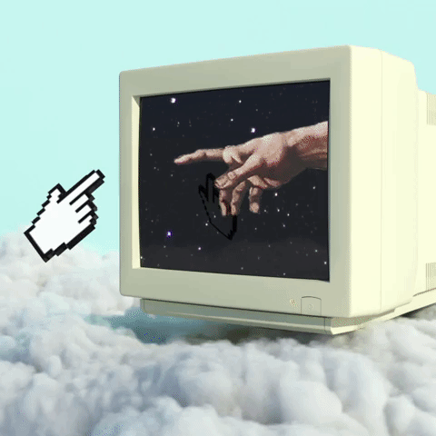
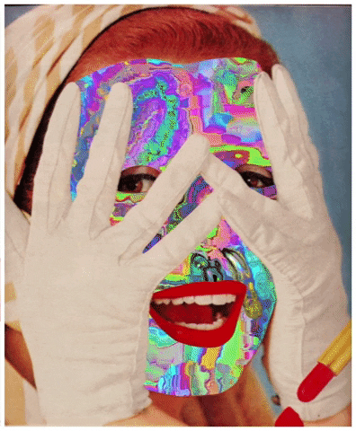

"El error de los museos [y la gestión cultural] es querer crear un público; la vida ya está creada, hazte cargo de ella"
1 A manera de introducción señalo que no sé exactamente cómo contestar la pregunta detonadora de este ensayo.
2 ¿Cómo sacar provecho de lxs espectadorxs, pantallas e imágenes para la gestión cultural y el arte? Honestamente no lo sé.
3 ¿La gestión de la cultura debe sacar algún provecho de las pantallas para funcionar? La respuesta más obvia sería que, en efecto, las pantallas y la circulación de imágenes son un recurso usado sin precedentes a razón de la pandemia.
4 y que gestionar la cultura a través de las pantallas es un nuevo reto al que todxs lxs que nos relacionamos con la profesión nos enfrentamos ahora y lo haremos por mucho tiempo.
5 Sin embargo, me preocupa (y claramente me disgusta) que pensemos a las pantallas y la circulación de imágenes solamente como una nueva herramienta que nos vimos obligadxs a usar por la pandemia y no como el fenómeno de virtualidad que en realidad representa.
6 Iván Flores explica que la digitalidad es la presencia casi invisible de la tecnología en nuestras vidas, que exactamente eso, sumando nuestro momento histórico, es lo que nos permite hablar de una cultura digital.
7 ¿Qué significaba sacar provecho de lxs espectadorxs, pantallas e imágenes para la gestión cultural antes de la pandemia? Durante la pandemia, ¿algo cambió? En una época postpandemia, ¿algo cambiará?
8 Pero aún más importante: ¿cómo era la cultura digital antes de la pandemia?
9 Claramente mi práctica como gestora cultural y como curadora se vio modificada. Doy clases y cursos de literatura electrónica a través de Jitzi Meet, monté una exposición en Instagram, tomo un curso de HTML para poder montar otra exposición de arte digital en una página web y mis actividades de divulgación de arte han migrado a transmisiones en vivo en redes sociales. Es simplemente imposible ignorar todos los flujos de datos que he generado.
10 Para ser sincera, no creo que debamos preguntarnos cómo utilizar las pantallas para la gestión cultural, sino cuáles han sido ya las experiencias y objetos culturales generados desde hace años en dichos entornos y que hemos decidido no observar sino hasta hace un año, cuando la pandemia inició. “El error de los museos [y la gestión cultural] es querer crear un público; la vida ya está creada, hazte cargo de ella” diría Tonatiuh López, quien dirige un museo sin paredes: un proyecto comunitario en Ecatepec, zona en donde a nadie le preocupa gestionar un proyecto cultural (justo como internet).
11 Me gusta la literatura digital porque me obliga a pensar fuera del molde, a replantearme los recursos didácticos que escojo, empleo y comparto, me permite aceptar que jamás en mi vida he sido creativa debido a las limitantes de la página impresa y experimentar con otros recursos mediales las maneras en las que gestiono y divulgo arte y cultura.







por último, pienso que...
la navegación puede hacer mucho por la gestión cultural, porque ¿qué otro recurso hipermedial, además del internet y sus propiedades naturales como lo son la multimedia y la cibernavegación, nos permitirían explorar quiénes somos, lo que hacemos y cómo nos percibimos a nosotrxs mismxs de maneras más fluidas, libres en relación con la cultura y el arte?